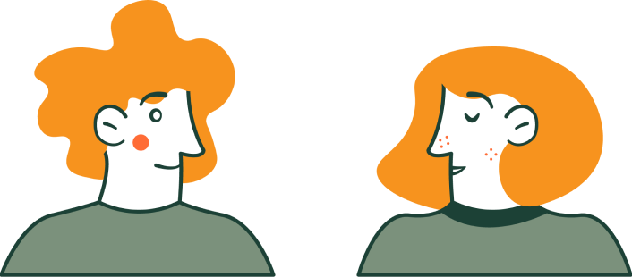

Тема 1. Введение в специфику профессиональной деятельности практического психолога
Благодаря продвижению психологических знаний в широкие массы, специалисты наблюдают:
✓ Процесс постепенного повышения общей психологической культуры населения.
✓ Рост количества людей, заинтересованных в саморазвитии, — в эффективном и своевременном решении своих проблем, в раскрытии своего потенциала, улучшении отношений с окружающими, более полном и ярком проживании каждого дня жизни.
✓ Повышение уровня требовательности к применяемым этическим нормам в работе практических психологов.
Взаимосвязь запроса на психологическую помощь и ответственности психологов:
✓ Возрастающий запрос на психологическую помощь значительно повышает и степень ответственности практических психологов перед современным обществом;
✓ Каждое обращение человека за помощью подразумевает как его доверие по отношению к самой психологии, так и доверие к психологам в целом;
✓ К сожалению, далеко не всегда доверие людей к психологам и психологии оправдывается.
В чём состоит общая специфика профессиональной деятельности практического психолога?
✓ Прежде всего, это уникальный формат межличностного общения, который не похож на общение коллег, дружеское или семейное общение! Основу отношений в диаде «консультант-клиент» составляют строгие принципы работы, которые находят выражение не только в методологии, но и профессиональной этике психолога;
✓ Работа психолога с клиентом имеет чёткие временные рамки, строится преимущественно на платной основе и ориентирована на разделение ответственности за конечный результат!
В ракурсе бытовой психологии имеет место своеобразный парадокс:
С одной стороны в диаде «Психолог – Клиент» позиции и роли изначально несопоставимые, неравные, но когда Клиент обращается за помощью к Психологу, эффективность его работы зависит от степени принятия взаимной ответственности, как это бывает в отношениях самых близких людей, то есть от их способности выстраивать предельно доверительное и честное общение.

Отношения между психологом и клиентом во многом напоминают «взаимосообщающиеся сосуды»:
✓ Профессиональные ошибки психолога обязательно сказываются на поведении клиентов и возвращаются к ним запросом на решение новых возникших проблем.
✓ Также как эффективные и удачные решения консультанта возвращаются ему в виде большей осознанности и конструктивности поведения клиента, что весьма облегчает их дальнейшую совместную работу.
Важная закономерность терапевтического/консультативного процесса:
✓ На определённом этапе в осознании и поведении клиента наблюдается возникновение тенденции к переносу высокозначимых отношений на фигуру психолога, который может неосознанно восприниматься клиентом как наставник, старший брат, отец, мать, супруг и т. п.
✓ У клиента может сформироваться болезненная зависимость от психолога, как от личности, обладающей теми иллюзорными качествами, которые приписывает ему клиент.
Специфика оказания психологической помощи:
Большинство людей обращаются за помощью к психологу только тогда, когда они переживают глубокий личностный кризис или явное чувство неудовлетворённости своей жизнью. Поэтому психологу приходится иметь дело не какой-либо одной проблемой, а с целым букетом застарелых, давно возникших страхов, разочарований, иррациональных установок, смутных тревог и травматических переживаний.
Важная процессуальная специфика психологической помощи:
В отличии, например, от врача-хирурга, чётко знающего, что ему необходимо отрезать или зашить в клиенте и какой результат он должен получить на выходе, психолог может скорее только прогнозировать возможные исходы терапевтического процесса, опираясь на те или иные логически допустимые и возможные варианты.
Факторы развития индивидуального сознания:
✓ Повышение социальной роли лиц, способных принимать ответственные решения;
✓ Резкое повышение доступности источников информации;
✓ Возможность коммуникации с народами и культурами;
✓ Возможность совершения далёких путешествий;
✓ Появление и распространение новых философских концепций и религиозных течений;
✓ Явное увеличение свободного личного времени;
✓ Расширение возможности выбора индивидуального стиля жизни;
✓ Расширение возможности выживания в экстремальных условиях;
✓ Возможность личного участия в общепланетарных движениях, акциях, сообществах и т. д.
Общая специфика психологической помощи:
Состоит в сочетании творческой непредсказуемости процесса и деликатного балансирования специалиста на той грани, где сочувствие и содействие клиенту не перерастают в излишнюю заботу, препятствующую его личностному росту
При любом исходе терапевтического процесса консультант должен сохранять уважение к жизненным выборам клиента, его уникальному опыту и соблюдать принцип чёткого разделения границ компетентности и ответственности в общении с клиентом
Тема 2. Специфические проблемы клиентов и психологов, актуализирующие значимость установления этических правил
Проблемы клиентов с невротической структурой личности
Среди наиболее распространённых категорий клиентов, обращающихся за помощью к психологам, является так называемая «невротическая личность».
Невротическую личность отличают метания в зависимости от мнений других, смена настроений от самоуничижения до обвинения других. Они не доверяют ни себе, ни другим людям и склонны к созданию т. н. фантомных образований, которые превращают их сознание в застывшее, неживое, не способное к развитию.
Правила жизни клиентов с невротической структурой личности
Применяемые невротиками правила жизни часто делают их заложниками весьма жестоких границ в отношении с миром. Эти границы могут осознаваться, либо не осознаваться самим клиентом, но в любом случае они реализуют те или иные защитные функции.
Во многих случаях невротическая личность подсознательно защищается от самой себя, своих теневых, то есть отвергаемых, но при этом наиболее волевых и заряженных частей.
«Правило запаса прочности» для оценки личности клиента
Психологу следует помнить следующее «правило запаса прочности»:
Каждая активная интервенция психолога должна соответствовать тому запасу прочности (состоящему из волевых качеств, самооценки и эмоциональной стабильности), который есть у клиента и который может внезапно иссякнуть под влиянием дополнительных неучтённых негативных факторов.
Всякий импульс и воздействующая сила, исходящие от консультанта, как правило, укрепляют одни структуры сознания и разрушают другие.
Основные и типичные признаки таких скрытых внутриличностных конфликтов клиентов:
Это хроническая усталость, переменчивость эмоций, чувство опустошённости и желание «быстрого избавления от всех несчастий», присутствующие у невротических клиентов.
Следует отметить, что данные проявления часто провоцируют консультантов на активные действия, оперативный «слом сопротивления» у клиентов, но далеко не всегда им стоит торопиться, так как без глубинного анализа и нейтрализации предпосылок этих конфликтов невозможно добиться реинтеграции личности, позитивных долгосрочных изменений.
Эффективность психотехнологий во многом зависит от социального контекста и основных жизненных установок клиента
Люди, не имеющие определённых целей и ценностей, часто приходят к психологу после множества неудачных попыток преодолеть скуку, разочарования, зависимости и тревогу посредством внешних радикальных воздействий на своё сознание – путешествий, алкоголя, смены сексуального партнёра, смены места работы и т. п.
Возникновение разочарований и нарастание неудовлетворённости жизнью берёт истоки в отсутствии или потере важных жизненных ориентиров, в обесценивании раннее поставленных целей.

Ситуация, провоцирующая у психолога соблазн проявления власти над клиентом
Как известно, к психологам часто приходят люди, желающие предать ответственность за свою жизнь кому-то другому. А потому почти у каждого психолога имеется немало возможностей сделать людей зависимыми от их мнения, их позиции и таким образом от их собственных интересов.
Если психолог не смог в достаточной степени проработать своё «эго», ему бывает трудно совладать с соблазном ложной самореализации, основанной на проявлении власти над клиентом.
Ситуация «навешивания» сверхответственности на психолога со стороны клиента
В нормативных ситуациях взаимодействия психолога и клиента вопрос распределения ответственности проговаривается на первой встрече и, как правило, завершается взаимным принятием ими ответственности за результат в примерной пропорции 50/50.
Однако некоторые клиенты считают (зачастую поначалу негласно), что психолог должен брать всю ответственность на себя. Такие клиенты осознанно, либо неосознанно, переносят на консультативный процесс одно из правил бизнеса, по которому «поставщик отвечает за качество услуг на все 100%».
Ловушка профессионального нарциссизма
Даже весьма опытные и успешные психологи порой попадают в состояние «лёгкого головокружения» от успехов в консультативном процессе.
Любые проявления профессионально-психологического нарциссизма могут так или иначе блокировать личностное развитие консультируемых клиентов, так как вызывают у них либо чувство собственной неполноценности, либо эмоциональное отстранение от консультанта.
Соблазн слепого следования «методическим модам»
Арсенал современной практической психологии постоянно пополняется новыми методами консультативной работы, новыми диагностическими методиками и приёмами коррекционного воздействия на клиентов.
В погоне за самыми последними новинками практической психологии консультант должен потратить массу времени на первичное ознакомление с новыми методиками и зачастую он просто не успевает как следует их освоить и чётко осознать границы и возможности их применения.
Ловушка получения «круглых сумм» за оказываемые услуги
Часть клиентов воспринимает крупные суммы как «гонорар успеха» по аналогии с юридическими услугами. Они искренне верят, что платят большие деньги «за то, чтобы эти проблемы решал кто-то другой»!
В тех случаях, когда оплата за услугу устанавливается психологом как некий «гонорар успеха», это загоняет его в необходимость «обязательной отработки» оплаченной суммы, необходимость имитации успешного и результативного процесса.
Соблазн чрезмерного экспериментирования
В ряд случаев «экспериментальный азарт» настолько захватывает психолога-экспериментатора, что клиенты из живых людей со своими проблемами начинают превращаться для него в «статистический материал».
При этом помощь клиентам в решении их проблем как исходная цель уходит на второй или третий план.
Ловушка запредельной профессиональной самоотдачи
Они стремятся поддерживать свой образ «неутомимого спасателя» и не хотят казаться «чёрствым», но со временем у них наступают вполне закономерные и неизбежные признаки эмоционального выгорания.
При этом качество оказываемой им психологической помощи, по мере нарастания профессионального выгорания, неизбежно снижается.
Тема 3. Профессионально-личностное развитие практического психолога как основа нормативно-этической саморегуляции его деятельности
От каких факторов зависит соблюдение этических норм?
Вероятность полноценной реализации этических норм в деятельности психолога зависит не только от уровня его личной нравственности, порядочности, но и от уровня и качества получаемой им общей профессиональной подготовки, то есть от суммы всех тех знаний, умений, специальных, профессиональных качеств и компетенций, которые он освоил.
1. Владение комплексом теоретических и практических знаний
Этот комплекс включает знания о механизмах психической жизни человека, о социально-психологических закономерностях поведения человека в обществе, о внутригрупповых процессах и ценностях, о причинах возникающих межличностных конфликтов и способах их разрешения, а также знания, позволяющие иметь собственные критерии оценки ситуаций и вырабатывать пути решения проблем в ходе оказания практической помощи.
2. Владение приёмами и методами системного анализа каждой сложной ситуации и проблемы клиента
Это, прежде всего, контекстуальный и многоуровневый социально-психологический анализ их взаимодействия с макро- и микросоциумом.
Не менее важны умения, обеспечивающие анализ и коррекцию глубинных психологических механизмов и индивидуальных установок клиентов, направленные на облегчение их травматических переживаний и постепенное устранение их проблем, на защиту их интересов и формирование соответствующих стратегий взаимодействия с людьми.
3. Владение приёмами и методами эмоциональной поддержки клиентов, навыками проявления активной эмпатии
Это обеспечивает высокую вероятность конструктивного участия в решении проблем клиентов, в том числе навыками формирования у клиентов позитивного самовосприятия в процессе оказания им профессиональной помощи.
Важно также умение подкреплять усилия отдельных лиц и групп по соблюдению таких социально важных ценностей, как гуманность, справедливость, аутентичное самовыражение, конфиденциальность, честность и самокритичность в различных сферах их жизнедеятельности.
4. Сознательное и разумное использование теоретических концепций и практико-ориентированных психологических знаний
Необходимо для постоянного профессионального саморазвития, для развития желаемых личностных качеств, включая развития способности к постоянному этическому анализу совершаемых действий, квалифицированному конструктивно-критичному самоанализу конечных результатов взаимодействия с окружающими людьми, совершаемого в личных и профессиональных целях.
5. Признание и эмоционально-волевое принятие всех сложностей профессиональной деятельности
Сознательная готовность специалиста брать на себя ответственность принимать решения по созданию определённых условий консультативного процесса, включая придание клиентам новых стимулов к развитию, новых направлений для их личностного и профессионального роста.
Это также принятие частичной ответственности за результаты внутригрупповой адаптации и социализации своих клиентов.
6. Наличие глубокой и искренней заинтересованности психолога в достижении позитивных результатов деятельности
Сознательная установка на работу в трудных условиях, на решение сложных психологических проблем клиентов, в том числе посредством активных консультаций, коррекционно-развивающих занятий, направленных на социально-психологическую реабилитацию клиентов, их адаптацию и реадаптацию в различных социальных группах.
Уровни овладения основами профессиональной деятельности
1. Репродуктивный – умение сообщать другим знания, оторыми владеешь сам (однако иногда даже самые глубокие знания не являются признаком профессиональной квалификации);
2. Адаптивный – достижение нового уровня знаний и умений, включающего в себя знание не только предмета деятельности, н и особенностей его восприятия и понимания;
3. Локально моделирующий знания – умение не только передавать и транслировать знания применительно к конкретной аудитории, но и конструировать их;
4. Системно моделирующий знания – владение стратегиями формирования системы знаний, специальных навыков и умений в целом.
Наиболее важные принципы, обеспечивающие соблюдение профессиональной этики в практической психологии
1. Принятие личной профессиональной ответственности
2. Соблюдение полной конфиденциальности
3. Обязанность проявления эмпатии по отношению к клиентам
4. Строгое соблюдение принципа «Не навреди!»
Почему этические принципы можно назвать важным профессиональным инструментарием психолога?
На их основе строятся анализ и оценка важнейших личных переживаний и чувств клиентов (таких как гордость, гнев, любовь, сочувствие), их волевых качеств, их отношения к себе и другим (включая взаимопомощь, доверие, дружбу, сочувствие, требовательность), их социальных качеств (межличностные установки, принципиальность, сознательность, отношение к новому), их общая культура поведения, их общественного сознания, их восприятие происходящих личностных изменений.
Отношение психолога к негативным реакциям и оценкам клиентов
Практический психолог должен всегда быть готовым к тому, что запросы клиента могут быть нереалистичны и даже аморальны, а его объективный «портрет» будет значительно расходиться с его представлениями о самом себе. И это зачастую вызывает весьма негативные и болезненные реакции у клиентов.
Тем не менее, психолог должен уметь адекватно принимать эти реакции, уважая право клиентов на выражение их собственного мнения.
Влияние целей и идей на формирование личности психолога-практика
Для полноценного профессионально-личностного становления и развития практического психолога важнейшую роль играет ориентация на какую-то социально значимую цель (и соответствующую ней нравственную идею), которая и интегрирует как различные знания и умения, приобретаемые в ходе обучения в вузе, так и постепенно накапливаемый этически оцениваемый опыт самостоятельной практической работы.
Общая логика формирования индивидуального стиля профессиональной деятельности психолога включает следующие важные этапы:
1 Этап: сначала психолог опирается на уже имеющиеся у него способности и умения, постепенно развивая их и приспасабливая к решению своих профессиональных задач.
2 Этап: на основе имеющихся личных качеств и умений постепенно возникают новые, раннее отсутствующие и адаптированные к требованиям профессиональной деятельности личные качества.
3 Этап: постепенно у специалиста формируется сложная взаимосвязанная система из уже имеющихся, раннее сформированных и новых профессиональных качеств.
Тема 4. Этический кодекс практического психолога: история создания и содержательный анализ
История создания первых профессиональных кодексов, призванных регулировать поведение психологов
В 1953 году Американской психологической ассоциацией был принят первый Этический кодекс для практикующих психологов.
В целях его разработки специально созданная Комиссия по этическим нормам проанализировала около 1000 профессиональных кейсов – случаев поведения психологов, которые требовали проверки на соответствие нормам общей и профессиональной этики. Итогом работы этой комиссии стал объёмный документ под названием «Этические нормы психологов» («Ethical standards of psychologists»), в котором на 171 странице был представлен как сам этический кодекс, так и описание этически сложных профессиональных ситуаций.
Принятие современных версий этических кодексов
В 1995 г. Европейская федерация психологических ассоциаций приняла к исполнению «Единый этический кодекс» («EFPA Meta-Code of Ethics») – версию единого европейского этического кодекса, актуальную и на сегодня.
В 2008 г. на ассамблее Международного совета по психологической науке была также принята «Универсальная декларация этических принципов для психологов» («Universal Declaration of Ethical Principies for Psychologists»), которая с 2002 г. разрабатывалась рабочей группой под руководством Жана Готье.
Разработка и принятие этического кодекса в России
Этический кодекс психолога был принят «Российским психологическим обществом» в феврале 2012 года;
При его разработке были учтены все международные правовые документы, включая Универсальную декларацию этических принципов для психологов («Universal Declaration of Ethical Principies for Psychologists») и Этический мета-кодекс Европейской федерации психологических ассоциаций («EFPA Meta-Code of Ethics»).
Этический кодекс психолога в России (преамбула)
Этический кодекс психологов служит:
✓ Для внутренней регуляции деятельности сообщества психологов;
✓ Для регуляции отношений психологов с обществом;
✓ Основой применения санкций при нарушении этических принципов профессиональной деятельности (п. 7 преамбулы Этического кодекса психолога РПО).
Распространяется на:
✓ Психологов (т. е. лиц, имеющих высшее образование)(п. 3 преамбулы Этического кодекса РПО);
✓ На все виды деятельности психологов, на все формы работы Психолога, в том числе осуществляемые дистанционно или посредством сети Интернет.
Базовые этические принципы работы психолога в РФ
1. Принцип Уважения
2. Принцип Компетенции
3. Принцип Ответственности
4. Принцип Честности
1. Принцип уважения (личного достоинства, прав и свобод личности)
✓ Психолог с равным уважение относится ко всем людям вне зависимости от их возраста, пола, национальности, принадлежности к определённой культуре, этноса и расы, вероисповедания, социально-экономического статуса, физических возможностей и других оснований.
✓ Недопустимо предвзятое отношение к Клиенту. Психолог избегает деятельности, которая может привести к дискриминации Клиента по любым основаниям.
✓ Психологу следует так организовывать свою работу, чтобы ни её процесс, ни её результаты не наносили вреда здоровью или социальному положению Клиента и связанных с ним лиц.
Конфиденциальность
✓ Информация, полученная Психологом в процессе работы с Клиентом, не разглашается вне согласованных условий.
✓ Демонстрируя конкретные случаи своей работы, Психолог должен обеспечить защиту достоинства и благополучия Клиента.
✓ Психолог не должен отыскивать о Клиенте информацию, которая выходит за рамки профессиональных задач Психолога.
✓ Клиент имеет право на консультацию Психолога или работу с ним без присутствия третьих лиц.
✓ Порядок обращения с полученными в исследованиях данными и порядок их хранения должны быть жёстко регламентированы.
Самоопределение клиента
✓ Клиент автономен, он имеет право вступать в профессиональные отношения с психологом и прекращать их.
✓ В случае недостаточной дееспособности человека решение о его сотрудничестве с Психологом принимает лицо, представляющее интересы этого человека по закону.
✓ Психолог не должен препятствовать желанию Клинта привлечь для консультации другого психолога (если нет юридических противопоказаний).
Осведомлённость и добровольное согласие клиента
✓ Клиент должен быть извещён о цели работы, о применяемых методах и способах использования полученной информации.
✓ Работа с Клиентом допускается только после того, как Клиент дал информированное согласие в ней участвовать.
✓ Видео - или аудиозаписи консультации и лечения Психолог может делать только после того, как получит согласие на это со стороны Клиента.
✓ Участие в психологических экспериментах и исследованиях должно быть добровольным. Клиент должен быть проинформирован о целях, особенностях исследования и возможном риске, чтобы самостоятельно принять решение о сотрудничестве.
✓ В тех случаях, когда предварительное исчерпывающее раскрытие информации противоречит задачам проводимого исследования, Психолог должен принять специальные меры предосторожности для обеспечения благополучия испытуемых, все разъяснения должны быть сделаны после окончания эксперимента.
2. Принцип компетентности
✓ Психолог обязан осуществлять практическую деятельность в рамках собственной компетентности, основанной на полученном образовании и опыте, повышать уровень своей профессиональной компетентности и свою осведомлённость в области этики психологической работы (исследования).
✓ Психолог должен владеть различными методами психологической работы, на уровне достаточном, чтобы поддерживать у Клиента чувство симпатии, доверия и удовлетворения от общения с Психологом.
✓ Если какие-либо обстоятельства вынуждают Психолога преждевременно прекратить работу с Клиентом и это может отрицательно сказаться на состоянии Клиента. Психолог должен обеспечить продолжение работы с Клиентом.
✓ Психолог несёт ответственность за соответствие профессионального уровня персонала, которым он руководит, требованиям выполняемой работы и настоящего Этического кодекса.
3. Принцип отвественности
✓ «Не навреди!»
✓ Психолог имеет право наносить вред, ибо он несёт ответственность за все возможные научные и социальные последствия своих экспериментов и влияние результатов своей деятельности на общественное мнение и развитие социальных представлений.
✓ Психолог-практик несёт ответственность перед клиентом, профессиональным сообществом и государством.
✓ При возникновении этических дилемм психолог консультируется с коллегами или напрямую с РПО.
4. Принцип честности
✓ Осознание границ личных и профессиональных возможностей
✓ Психолог должен известить Клиента или работодателя о том, что его деятельность в первую очередь подчиняется профессиональным, а не коммерческим принципам.
✓ Реклама услуг психолога должна быть правдива, отражать объективную информацию, соблюдать нормы приличия.
✓ Психолог не допускает искажений в данных своих исследований, а если они возникли – информирует об этом всех заинтересованных лиц.
✓ Психолог не использует отношения с клиентом в личных интересах, не должен вступать ни в какие личные отношения с клиентом.
Честность это и есть открытость перед профессиональным сообществом!
✓ Результаты психологических исследований должны быть доступны для научной общественности. Данные об участниках эксперимента должны быть анонимными.
✓ Психолог обязан уважать своих коллег и не должен необъективно критиковать их профессиональные действия.
✓ Психолог не должен своими действиями способствовать вытеснению коллеги из его сферы деятельности и лишению его работы.
✓ Если Психолог считает, что его коллега действует непрофессионально, он должен указать ему на это конфиденциально.
Блок 2. Санкции за нарушение этического кодекса
В качестве санкций, применяемых к Психологу, нарушившему Этический кодекс, могут выступать:
✓ Предупреждение от имени Российского психологического общества (общественное порицание);
✓ Приостановление членства в Российском психологическом обществе, сопровождающееся широким информированием общественности и потенциальных клиентов об исключении данного специалиста из действующего реестра психологов РПО.
✓ Информация о применяемых санкциях является общедоступной и передаётся в профессиональные психологические ассоциации других стран.
✓ В случае серьёзных нарушений Этического кодекса Российское психологическое общество может ходатайствовать о привлечении Психолога к суду.
Юридическая ответственность психолога:
Гражданско-правовая
Статья 151 ГК РФ: Компенсация морального вреда
Если гражданину причинён моральный вред (физические или нравственные страдания), действиями, нарушающими его личные неимущественные права, либо посягающими на принадлежащие гражданину нематериальные блага, а также в других случаях, предусмотренных законом, суд может возложить на нарушителя обязанность денежной компенсации указанного вреда.
Уголовно-правовая
Статья 171 УК РФ
Осуществление предпринимательской деятельности без регистрации или без лицензии в случаях, когда такая лицензия обязательна, если это деяние причинило крупный ущерб гражданам, организации и государству, либо сопряжено с извлечение дохода в крупном размере.
Тема 5. Профессиональные кризисы и деструкции в карьере практического психолога, их влияние на вопросы соблюдения этики
Развивающий и оздоравливающий эффект психологии выражается в способности профессионала к созданию атмосферы эмпатии, искренности, саморазвития и конструктивных взаимоотношений в микросоциуме клиентов.
Настоящий – «идейный» психолог способен привести к гармонии и личностному развитию своих клиентов поскольку сам это умеет делать в отношении собственной личности и самое главное – знает, зачем он это делает!
Каждому психологу требуется пройти сложные этапы формирования индивидуального стиля деятельности
✓ На первом этапе важно осваивать профессиональную деятельность по уже отработанным схемам и процедурам, то есть научиться работать так, «как положено».
✓ На втором этапе уже более опытный специалист может позволить себе некоторое отступление от стандартизированных образцов работы.
✓ Но наиболее важным этапом и результатом профессионального становления является развитие личности самого психолога, прежде всего, развитие его духовной и ценностно-смысловой сферы.
Отношение психолога к кризисам развития
Для каждого психолога важно научиться вовремя осознавать свои личные и профессиональные кризисы, выявлять их причины и управлять ими.
Кризис – это своеобразный «шанс» для простого человека и тем более профессионала – перейти на следующий этап своего развития.
Однако каждый последующий этап развития должен быть как следует освоен, заслужен или даже «выстрадан».
Способность к переживанию личностного и профессионального кризиса
Каждый кризис, как правило, поначалу приводит к стихийному извержению большого количества эмоциональной энергии. И проблема заключается в том, чтобы умело использовать энергию своего кризиса (включая кризис профессионального развития), чтобы направить её в конструктивное русло.
Возможно, формирование у себя такой способности и умения является для психолога даже более важным результатом обучения, чем все знания и остальные умения, вместе взятые.
Кризисы профессионального становления как цепь постоянных «разочарований»
При этом самым болезненным «разочарованием» становится разочарование в самом себе, то есть неуверенность психолога в том, что он правильно выбрал себе профессию, что из него получится настоящий профессионал.
На самом деле, «разочарование» есть ни что иное, как освобождение от иллюзий, вызванных завышенными ожиданиями в отношении различных аспектов своей профессиональной деятельности (например, оплата труда, отдача от клиентов, оценки со стороны коллег и т. д.).
7 этапов профессионального становления и развития психологов:
1 Этап: восторженно-романтических настроений.
2 Этап: стремление к быстрому самоутверждению.
3 Этап: первых и последующих разочарований, неизбежных, но вполне преодолимых.
4 Этап: начало самостоятельных решений профессионально-психологических проблем.
5 Этап: первых серьёзных попыток работать по-новому.
6 Этап: осознанного повторного обращения к теоретико-методологическим основам психологии.
7 Этап: импровизации и профессионального творчества в психологии.
Стадии смещения акцентов в поиске главного предмета своей деятельности:
1 стадия. Первоначально бывает проявлена ориентация на имеющиеся традиционные проблемы психологии, на проблемы обслуживаемых клиентов.
2 стадия. Постепенно приходит понимание того, что во многом эффективность исследований и практической помощи зависит от применяемых методов.
3 стадия. Психолог начинает всё больше доверять своей профессиональной интуиции и начинает опираться в своей работе на собственное видение ситуаций и проблем клиентов.
4 стадия. Психолог всё больше задумывается о своей «миссии», о своём «предназначении» и «призвании».
Типичные тенденции в развитии профессиональных деструкций
1. Отставание или замедление профессионального развития.
2. Несформированность стиля профессиональной деятельности.
3. Дезинтеграция профессионального развития, распад профессионального сознания.
4. Низкая профессиональная мобильность, неумение приспособиться к новым условиям труда.
5. Рассогласованность звеньев общей профессиональной деятельности.
6. Ослабление ранее имевшихся профессиональных данных, уменьшение профессиональных способностей, снижение профессионального мышления.
7. Искажение профессионального развития, появление ранее отсутствовавших негативных качеств.
8. Появление деформаций личности на поздних этапах деятельности.
9. Прекращение профессионального развития из-за профессиональных заболеваний или потери работоспособности.
Оптимальная позиция практического психолога в преодолении дистрессов
Выдающийся психофизиолог Г. Селье даёт простую и понятную рекомендацию:
«Стремись к самой высшей из доступных тебе целей. И не вступай в борьбу из-за безделиц».
Г. Селье отмечает неразрывность связи стрессов и работы, когда, с одной стороны, «главный источник дистресса – в неудовлетворённости жизнью, в неуважении к своим профессиональным занятиям», а с другой стороны, именно стресс и творческое напряжение в труде дают «аромат и вкус жизни».
В чём главная опасность формирования профессиональных деструкций?
Профессиональные деструкции в большинстве случаев развиваются достаточно медленно, а значит, почти незаметно.
Это не только затрудняет их своевременное распознавание и принятие каких-то контрмер, но и создаёт ситуацию, когда психолог, опять же «постепенно», начинает привыкать к этим негативным тенденциям в развитии, и деструкция становится неотъемлемой частью его личности.
Ощущение целостности в профессионально-личностном развития психолога
Ощущение целостности у психолога образуется на основе выделения и укрепления (в процессе мучительных и творческих поисков) истинной уникальности, духовного начала, личностного «стержня», что становится смыслообразующей основой для утверждения его профессионального мастерства и достоинства, неповторимости стиля работы, а в итоге и утверждения права стать тем, кто реально, став духовно сильной личностью в этом мире, помогает другим обрести их собственную силу.
Тема 6. Личная терапия и супервизия как важные условия профессионального развития и соблюдения этических принципов
Особенности профессионального овладения методологиями и техниками практической психологии
Методологии и техникам профессиональной практической деятельности психолога невозможно научиться только по книгам и учебникам, так как «помогающие», клиенто-центрированные профессии требуют требуют практической проработки и оттачивания профессиональных навыков и собственного развития путём анализа и возможности разбора конкретных жизненных ситуаций взаимодействия.
Каждому практикующему психологу необходимы систематическая индивидуальная терапия, профессиональная супервизия, то есть опыт погружения в особый вид психотерапевтических, консультационных отношений в роли «клиента».
Эффекты, получаемые в ходе личной терапии психолога
1. Улучшение эмоционального и психического самочувствия будущего специалиста-психолога;
2. Обеспечение лучшего понимания личной динамики (более осознанный вариант консультирования);
3. Снятие эмоционального напряжения, связанного с профессиональной деятельностью психолога;
4. Накопление большого опыта взаимодействия в рамках консультирования и психотерапии;
5. Развитие чувствительности к потребностям и реакциям клиента путём «помещения в роль клиента»;
6. Возможность наблюдать эффекты воздействия различных методов и техник, находясь внутри процесса.
Рейтинг эффектов, возникающих при прохождении собственной терапии
1. Самосознание и самопонимание (133)
2. Самооценка или уверенность в себе (98)
3. Повышение квалификации как консультанта (77)
4. Улучшение отношений с родителями (17)
5. Получение психологической поддержки (17)
6. Открытие и принятие чувств (17)
7. Улучшение взаимоотношений с другими людьми в целом (13)
8. Снижение депрессии и навыки управления ею (13)
9. Снижение тревоги и навыки её контроля (13)
10. Личностный рост (12)
11. Увеличение чувства контроля (11)
Помимо индивидуальной психотерапии каждый психолог (особенно начинающий) нуждается в опытном наставнике-супервизоре
Супервизия – один из методов подготовки и повышения квалификации в области психологии. Это важнейшая форма консультирования практического психолога (психотерапевта) в ходе его работы с более опытным, специально подготовленным коллегой, позволяющая супервизируемому систематически видеть, осознавать. Понимать и анализировать свои профессиональные действия и своё профессиональное поведение.
Супервизия как особый вид деятельности психолога выполняет следующие функции:
1. Формирующую (подразумевающую развитие умений, навыков, понимания и способностей специалиста-психолога);
2. Поддерживающую (подразумевающую нивелирование негативных последствий взаимодействия с потребителями психологических услуг);
3. Направляющую (подразумевающую контроль психологом собственных зон уязвимости, предрассудков, «болевых точек», зон роста и развития).
Предметом супервизии обычно становятся следующие вопросы и темы:
✓ Возможность большего самопознания супервизируемым (вопросы: «Почему я именно так реагирую на конкретного клиента?», «Почему я так отношусь к себе как к профессионалу?»)
✓ Анализ взаимоотношений с клиентом (анализ способов реагирования на клиента, собственных переносов, избеганий, эмоциональных зависимостей);
✓ Рефлексия складывающихся паттернов взаимоотношений с участниками супервизии (супервизором, группой супервизируемых);
✓ Расширение с помощью супервизора знаний и навыков, требуемых для решения определённых задач, либо осознание причин того, почему какие-либо знания не используются супервизируемым;
✓ Анализ организационных и деловых отношений в рамках психологической практики (организация встреч с клиентами, взаимоотношения с коллегами, администрацией и т. п.).
Различия между индивидуальной психотерапией и супервизией
В отличие от психологического консультирования (психотерапии) в процессе супервизии происходит «терапия» не личности специалиста, а процесса консультирования, рассматривающего опыт собственной практики взаимодействия с клиентами супервизируемого, блокаторы и контрпереносные явления, которые могут мешать оказанию психологической помощи.
Супервизия предполагает глубинный психологический анализ и вместе с тем более формализованный и иерархически выстроенный процесс, в ходе которого происходит переоценка действий психолога-профессионала.
Психотерапия / психологическое консультирование
✓ Терапия личности (отдельных её аспектов, проблем)
✓ Основная цель – личностный рост
✓ Безоценочное отношение к клиенту
✓ Более свободный от формальных рамок процесс, длительность которого определяется запросом потребителя психологических услуг
Супервизия
✓ Терапия процесса консультирования ( процесса терапии), опыт которого имеется у супервизируемого
✓ Основная цель – рост профессионализма психолога как консультанта
✓ Некоторые модели супервизии предполагают оценку деятельности супервизируемого как специалиста
✓ Более иерархические отношения между супервизором и супервизируемым; длительность супервизии часто регламентирована программой обучения специалиста, условиями его деятльности.
Интервизия (ко-визия) – взаимная супервизия двух практикующих специалистов одного уровня, которые могут прояснять свои проблемы, поочерёдно выслушав друг друга. Это форма работы выгодна тем, что она бесплатна и удобна (взаимные услуги оказываются «на месте», не тратится время на проезд супервизору). Она с лёгкостью может перейти в пролонгированную постоянную работу над анализом практики.
К разновидностям супервизии или интервизии можно отнести «балинтовские группы»
Это эффективный формат совместного развития психологов и метод повышения профессионально-коммуникативных навыков, позволяющих снизить профессиональный стресс и эмоциональное выгорание.
Данный метод используется не только психологами, но и в группах учителей, социальных работников, юристов, священников и других специалистов, основой работы которых являются взаимодействие и профессиональная коммуникация. Приоритетные ценности в работе Балинтовские группы: безопасность обсуждения, анализ и эмоциональная поддержка её участников.
История создания и развития балинтовских групп
В 50-х гг. ХХ в. Майкл Балинт, психоаналитик из Венгрии, эмигрировавший в Великобританию в 1930-е гг., развил множество интересных идей в своей знаменитой книге «Врач, его пациент и болезнь».
Он отмечал, что пациент реагирует не только на лекарства, но и на взаимодействие с врачом, складывающийся между ними контакт.
Особенности функционирования балинтовских групп
✓ Основное внимание в таких группах обычно уделяется психологическим аспектам профессиональной деятельности специалиста и в частности эмоционального содержания выполняемой работы.
✓ Балинтовские группы для психологов обеспечивают благоприятные условия профессионального и личностного развития, приобретения новых знаний, возможностей по-новому взглянуть на важные аспекты своей работы.
Структура и процесс совместной работы в балинтовских группах
✓ Балинтовская группа может включать в себя до 12 участников, которые рассаживаются по кругу вместе с ведущим группы и двумя его помощниками.
✓ Один из участников рассказывает случай из своей профессиональной практики. В процессе рассказа акцент ставится не на конкретных проблемах клиента (пациента), а на чувствах, которые возникали у специалиста при общении с ним, на трудности, с которыми столкнулся специалист в процессе общения с человеком, обратившимся за помощью.
✓ Другие участники слушают, затем обсуждают этот случай, фокусируясь на особенностях взаимоотношений психолога и клиента, которые были отмечены слушателями в процессе рассказа.
Эффекты применения методов развития профессионализма
✓ Такие методы роста профессионализма как супервизия и балинтовские группы позволяют психологам чётко придерживаться соблюдения этики и развивать постоянную рефлексию в отношении процесса и результатов выполнения их профессиональной деятельности.
✓ Применение этих методов развития профессионализма способствует общему возрастанию этических норм специалистов и во многом обуславливают общую продуктивность профессиональной деятельности психолога-консультанта.
Основная литература
1. Тарасова Е. В., Черемухин А. Д. Представления психологов консультантов об этических ценностях, профессиональной устойчивости и жизнеспособности в деятельности
2. Пряжников Н. С. Этические проблемы психологии: учебно-методическое пособие